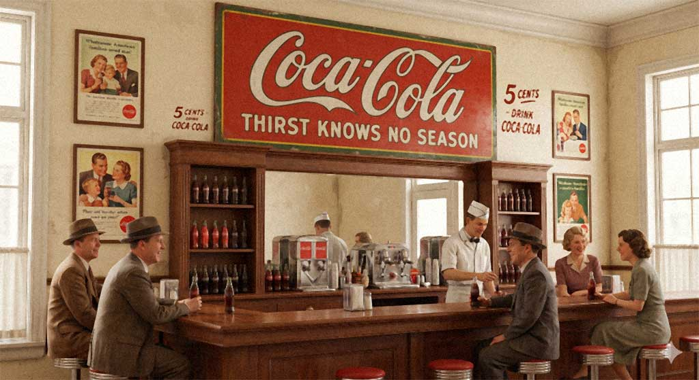
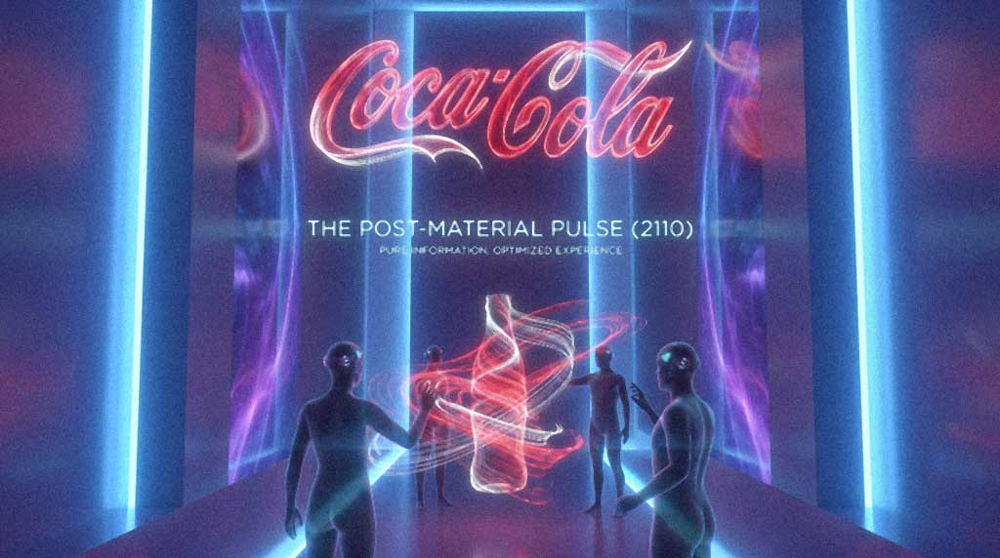

Дизайн-кейс / 2110
Coca-Cola: Эволюция сквозь время
Что если бренд - это не логотип, а живая система, развивающаяся вместе с человечеством?
Refreshment
Joy
Connection
Введение
Бренд как временная цивилизация
Я собрал визуальную концепцию эволюции Coca-Cola через ключевые временные эпохи - от 1934 года до гипотетического 2110. Это не редизайн. Это бренд как временная цивилизация.
Сводка эволюции
Как меняется форма, когда ДНК остается прежней
| Эпоха | Логотип | Технология | Эмоция | Медиа |
|---|
Coca-Cola остаётся узнаваемой не благодаря форме, а благодаря своей эмоциональной ДНК.
refreshment / joy / connection
Typeface: ZVEZDA NHZDN by Kuznetsov Konstantin

Финальный вопрос
Если бренд способен пережить восемь эпох будущего - каким он должен быть уже сегодня?
Coca-Cola превращается из упаковки и знака в систему узнаваемого чувства: стабильного красного, жеста связи и обещания освежения, которое меняет носители, но не теряет смысл.
Обсудим ваш продукт?
Забронируйте 15-минутный звонок, чтобы разобрать продукт и найти точки роста.